Legacy Document
Important: The information in this document is obsolete and should not be used for new development.
Creating a WebObjects Database Application
One of the most powerful features of WebObjects is its ability to provide access to databases. To do so, it uses a framework called the Enterprise Objects Framework. This chapter introduces you to the Enterprise Objects Framework by showing you how to create a simple database application. The steps you take in creating this application demonstrate the principles you’ll use in every other application you develop with the WebObjects and Enterprise Objects frameworks.
The application you’ll create in this tutorial is called Movies. It makes use of a sample database, the Movies database, that contains information about movies. In this tutorial we’ll use the OpenBase Lite database that comes with WebObjects. If you wish to use another database, you need to set up the Movies database as described in the Post-Installation Instructions. Also, if you aren’t familiar with Project Builder and WebObjects Builder, read the first tutorials in this book, “Creating a WebObjects Database Application” and “Enhancing Your Application,” which introduce basic concepts and procedures you should know before you go on.
In this tutorial, you will
Use EOModeler’s wizard to create a basic model file.
Use the WebObjects Application Wizard to create a fully functional Main component that reads and writes from the Movies database.
Create custom enterprise object classes.
Create and configure display groups for interacting with a database in terms of objects.
Create bindings between display groups and a user interface.
Write code to manipulate display groups’ selected objects.
Set up display groups in a master-detail configuration.
Use EOModeler to enhance a model file.
Along the way, you’ll learn basic Enterprise Objects Framework concepts you can use to design your own database applications.
Note: You can also develop database applications using Direct to Web, a high-level framework based on WebObjects. Direct to Web instantly generates a generic database application and allows you to modify its user interface, which makes it a useful starting point for simple projects without very specific user interface requirements. See Developing WebObjects Applications With Direct to Web for more information.
In this section:
The Movies Application
Enterprise Objects and the Movies Database
Defining the Model
Designing the Main Page
Examining Your Project
Refining Main.wo
Adding the MovieDetails Page
Refining Your Model
Setting Up a Master-Detail Configuration
Updating Objects in the Detail Display Group
Adding Behavior to Your Enterprise Objects
The Movies Application
The Movies application has two pages, each of which allows you to access information from the database in different ways:
MovieSearch (the main page) lets you search for movies that match user-specified criteria. For example, you can search for all comedies starting with the letter “A”. Once you find the movie you’re looking for, you can make changes to its data or delete it. You can also use this page to insert new movies into the database.
MovieDetails displays the actors who star in a selected movie and the roles those actors play. You can add new roles, change the name of a role, and assign a different actor to a role.
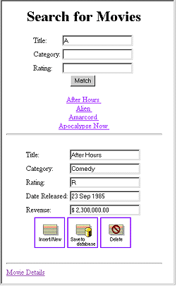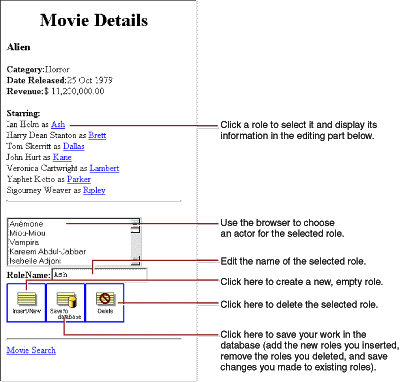
Enterprise Objects and the Movies Database
Enterprise Objects Framework manages the interaction between the database and objects in the Movies application. Its primary responsibility is to fetch data from relational databases into enterprise objects. An enterprise object, like any other object, couples data with methods for operating on that data. In addition, an enterprise object has properties that map to stored data. Enterprise object classes typically correspond to database tables. An enterprise object instance corresponds to a single row or record in a database table.
The Movies application centers around three kinds of enterprise objects: Movies, MovieRoles, and Talents. A movie has many roles, and talents (or actors) play those roles.
The Movie, MovieRole, and Talent enterprise objects in the Movies application correspond to tables in a relational database. For example, the Talent enterprise object corresponds to the TALENT table in the database, that has LAST_NAME and FIRST_NAME columns. The Talent enterprise object class in turn has lastName and firstName instance variables. In an application, Talent objects are instantiated using the data from a corresponding database row, as shown in the following figure:
Enterprise Objects and Relationships
Relational databases model not just individual entities, but entities’ relationships to one another. For example, a movie has zero, one, or more roles. This is modeled in the database by both the MOVIE table and MOVIE_ROLE table having a MOVIE_ID column. In the MOVIE table, MOVIE_ID is a primary key, while in MOVIE_ROLE it’s a foreignkey.
A primary key is a column or combination of columns whose values are guaranteed to uniquely identify each row in that table. For example, each row in the MOVIE table has a different value in the MOVIE_ID column, which uniquely identifies that row. Two movies could have the same name but still be distinguished from each other by their MOVIE_IDs.
A foreign key matches the value of a primary key in another table. The purpose of a foreign key is to identify a relationship from a source table to a destination table. In the following diagram, notice that the value in the MOVIE_ID column for both MOVIE_ROLE rows is 501. This matches the value in the MOVIE_ID column of the “Alien” MOVIE row. In other words, “Ripley” and “Ash” are both roles in the movie “Alien.”
Suppose you fetch a Movie object. Enterprise Objects Framework takes the value for the movie’s MOVIE_ID attribute and looks up movie roles with the corresponding MOVIE_ID foreign key. The framework then assembles a network of enterprise objects that connects a Movie object with its MovieRole objects. As shown below, a Movie object has an array of its MovieRoles, and the MovieRoles each have a Movie.
Defining the Model
A model associates database columns with instance variables of objects. It also specifies relationships between objects in terms of database join criteria. You create model files using the EOModeler application. The wizard can assist you in creating a model using the schema information from an existing database as a starting point. You can then use EOModeler to modify the model.
Creating a New Model File
Launch EOModeler.
The EOModeler application is located in the WebObjects application group.
Choose Model > New.
The wizard’s adaptor selection panel appears. An adaptor is a mechanism that connects your application to a database. WebObjecject provides a JDBC adaptor that enables you to access any JDBC-compliant database. Make sure that JDBC is selected in the selection list.
Click Next.
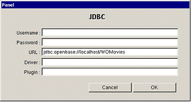This panel lets you specify connection information to your database. The only information required for the tutorial is the URL. On the URL field type “jdbc:openbase://localhost/WOMovies” without the quotes.
Click OK.
Choosing What to Include in Your Model
In this next wizard page, you can specify the degree to which the wizard configures your model.
The basic model the wizard creates contains entities, attributes, and relationships. An entity is the part of the database-to-object mapping that associates a database table with an enterprise object class. For example, the Movie entity maps rows from the MOVIE table to Movie objects. Similarly, an attribute associates a database column with an instance variable. For example, the title attribute in the Movie entity maps the TITLE column of the MOVIE table to the title instance variable of Movie objects.
A relationship is a link between two entities that’s based on attributes of the entities. For example, the Movie entity has a relationship to the MovieRole entity based on the entities’ movieId attributes (although the attributes in this example have the same name in both entities, they don’t have to). This relationship makes it possible to find all of a Movie’s MovieRoles.
How complete the basic model is depends on the completeness of the schema information inside your database server. For example, the wizard includes relationships in your model only if the server’s schema information specifies foreign key definitions.
Using the options in this page, you can supplement the basic model with additional information. (Note that the wizard doesn’t modify the underlying database.)
Check the “Assign primary keys to all entities” box.
Enterprise Objects Framework uses primary keys to uniquely identify enterprise objects and to map them to the appropriate database row. Therefore, you must assign a primary key to each entity you use in your application. The wizard automatically assigns primary keys to the model if it finds primary key information in the database’s schema information.
Checking this box causes the wizard to prompt you to choose primary keys that aren’t defined in the database’s schema information. If your database doesn’t define them, the wizard later prompts you to choose primary keys.
Check the “Ask about relationships” box.
If there are foreign key definitions in the database’s schema information, the wizard includes the corresponding relationships in the basic model. However, a definition in the schema information doesn’t provide enough information for the wizard to set all of a relationship’s options. Checking this box causes the wizard to prompt you to provide the additional information it needs to complete the relationship configurations.
Uncheck the “Ask about stored procedures” box.
Checking this box causes the wizard to read stored procedures from the database’s schema information, display them, and allow you to choose which to include in your model. Because the Movies application doesn’t require the use of any stored procedures, don’t check this box.
Uncheck the “Use custom enterprise objects” box.
An entity maps a table to enterprise objects by storing the name of a database table (MOVIE, for example) and the name of the corresponding enterprise object class (a Java class, Movie, for example). When deciding what class to map a table to, you have two choices: EOGenericRecord or a custom class. EOGenericRecord is a class whose instances store key-value pairs that correspond to an entity’s properties and the data associated with each property.
If you don’t check the “Use custom enterprise objects” box, the wizard maps all your database tables to EOGenericRecord. If you do check this box, the wizard maps all your database tables to custom classes. The wizard assumes that each entity is to be represented by a custom class with the same name. For example, a table named MOVIE has an entity named Movie, whose corresponding custom class is also named Movie.
Use a custom enterprise object class only when you need to add business logic; otherwise use EOGenericRecord. The Movies application uses EOGenericRecord for the Movie entity and custom classes for the Talent and MovieRole entities. Later on, you’ll use EOModeler to specify the custom classes.
Click Next.
Choosing the Tables to Include
In the wizard panel, select MOVIE, MOVIE_ROLE, and TALENT in the Tables browser.
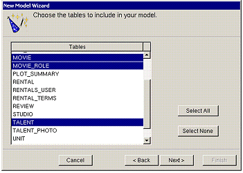The wizard creates entities only for the tables you select. Since the Movies application doesn’t interact with any of the other tables (for example, DIRECTOR, PLOT_SUMMARY, STUDIO, and TALENT_PHOTO), you don’t need to include them in the model.
Click on Select None. Then select the MOVIE, MOVIE_ROLE, and TALENT tables. You will need to use the Control key to make your selections.
Click Next.
Click Finish
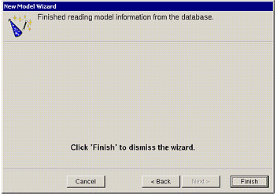
Saving the Model
Once the wizard is finished gathering schema information, it’s ready to create the model.
Choose Model > Save.
Navigate to a directory where you want to save the model.
Type “Movies” in the File name field.
Click Save.
Close EOModeler.
Designing the Main Page
Every WebObjects application has at least one component—usually named Main—that represents the first page the application displays. In Movies, the Main component represents the MovieSearch page.
To design the Main component, you’ll use the WebObjects Application Wizard. The wizard performs all the setup that’s necessary to fetch database records and display them in a web page. Specifying different wizard options yields different pages: The MovieSearch page is an example of one of the many different layouts you can generate with the wizard.
Starting the WebObjects Application Wizard
In Project Builder, choose Project > New.
In the New Project panel, select Java WebObjects Application from the Project Type pop-up list.
Click Browse.
Navigate to a directory where you want to create your new project.
Type Movies in the “File name” field.
Click Save.
In the New Project panel, click OK.
This starts the WebObjects Application Wizard.
Choose Wizard under Available Assistance.
With this option, the wizard guides you through the creation of a Main component for your application. When you finish, you can immediately build and run your application without performing any additional steps and without adding any code.
Click Next.
For the “J2EE Integration” window, leave the defaults and click Next.
For the “Web Services” window, leave the defaults and click Next.
In the “Choose EOAdapters” window, make sure JDBC is selected, and click Next.
Specifying a Model File
Choose “Open existing model”.
Click Browse.
Navigate to the directory where you saved the model.
Select
Movies.eomodeld.Click Open.
Click Next.
Choosing an Entity
In this page, the wizard asks you to choose the entity around which the Main component will be centered. Your Main component centers around the Movie entity.
Select the Movie entity.
Click Next.
Choosing a Layout
The wizard provides several page layout options for formatting objects fetched from the database.
Choose Selected Record.
Choose Matching Records.
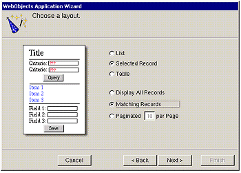Based on your specifications, the wizard shows you a preview of the page it will generate. To see how the wizard’s preview corresponds with the actual page the wizard will create, the finished page is shown below.
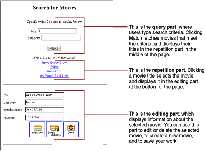There are three parts to this page: the query part (at the top of the page), which contains fields in which users provide search criteria; the repetition part (in the middle of the page), which contains a list of matching records fetched from the database; and the editing part (at the bottom of the page), which allows you to make changes to the selected record.
In the wizard panel, click Next.
Choosing Attributes to Display
The next step is to choose which of the Movie entity’s attributes to display in the editing part at the bottom of the page.
Move attributes from the Don’t Include list to the Include list.
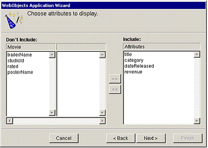The order in which you add the attributes determines the order in which they appear on the page, so add them in the following order:
title,category,dateReleased, andrevenue.Don’t add any of the remaining attributes (for example,
trailerName,studioId,rated, andposterName)—they aren’t used in this tutorial.Click Next.
Choosing an Attribute to Display as a Hyperlink
You now need to specify the attribute used in the repetition part of the page to identify each record. This attribute will be displayed as a hyperlink. Clicking the hyperlink displays the corresponding record in the detail part of the page.
Add the
titleattribute to the Include browser.Click Next.
Choosing Attributes to Query On
Specify the attributes to display in the query part of the page. The wizard creates search criteria fields for each of the attributes you choose.
Add the
titleandcategoryattributes to the Include browser.Click Finish.
When the wizard finishes, your new project is displayed in Project Builder. The wizard has produced all the files and resources for a fully functional, one-page application. All you need to do before running your Movies application is build it.
Running Movies
Experiment with the application by entering different search criteria and inserting, updating, and deleting movies. For example:
Search for all movies beginning with the letter “A”.
Type A in the title field, and click Match.
Change the attributes of one of the movies and click “Save to database.”
When you’re done, perform another search to verify that your change was saved.
Create a new movie.
Click Insert/New to create a new, empty movie. Fill out all the fields, and click “Save to database.” Search for your movie to verify that it was saved successfully.
Delete your movie.
With your movie selected, click Delete and then click “Save to database.” When you’re done, search for the movie again to verify that it’s been deleted.
Examining Your Project
Whenever you create a new project, Project Builder populates the project with ready-made files and directories. What it includes depends on the choices you make in the wizard, so this project has a set of files different from those of the GuestBook project.
Like GuestBook, the Movies project contains a Main component (Main.wo). It also includes some files that the GuestBook doesn’t have: a model file, and images used by the Main component.
In Project Builder, navigate to the Movie project’s Resources category. This is where the model, named Movies.eomodeld, is located. Later in this tutorial you’ll use EOModeler to open the model and enhance it.
Navigate to the Web Server Resources category. This is where your project’s images are located: DBWizardUpdate.gif, DBWizardDelete.gif, and DBWizardInsert.gif, for the “Save to database,” “Delete”, and “Insert/New” buttons, respectively.
The biggest difference between the GuestBook and Movies projects is their Main components. Whereas the Main component you created for the GuestBook project was empty, the Main component for the Movies project contains a fully functional user interface. Also, the Main.java class already contains code that supplies the component with behavior. In the next sections, you’ll examine the Movies project’s Main.wo component and its Main.java class.
Examining the Variables
Double-click
Main.woin Project Builder’s Web Components category to open the Main component in WebObjects Builder.There are four variables in the object browser: the
applicationandsessionvariables that are available in all components and two others,movieandmovieDisplayGroup.The
movievariable is an enterprise object that represents a row fetched from the MOVIE table.movieDisplayGroupis a display group—an object that interacts with a database, indirectly through classes in the Enterprise Objects Framework. Display groups are used to fetch, insert, update, and delete enterprise objects that are associated with a single entity. The entity ofmovieDisplayGroupis Movie, which you specified in the wizard’s “Choose an entity” page.In Project Builder, look at the class file
Main.javato see howmovieis declared.The
moviedeclaration (shown below) declaresmovieto be an EOEnterpriseObject—a Java interface that describes the general behavior that all enterprise objects must have./** @TypeInfo Movie */
protected EOEnterpriseObject movie;
At runtime,
movieis a EOGenericRecord object. Recall that EOGenericRecord is used to represent enterprise objects unless you specify a custom class. Since you didn’t check the “Use custom enterprise objects” box in the wizard’s “Choose what to include in your model” page, your application uses EOGenericRecord for all its entities.The comment (/** @TypeInfo Movie */) is used by WebObjects Builder to identify
movie’s entity (Movie). Knowing the entity allows WebObjects Builder to displaymovie’s attributes (category,dateReleased, and so on). You can seemovie’s attributes if you select themovievariable in the WebObjects Builder’s object browser.In Project Builder, examine the
movieDisplayGroupdeclaration inMain.java.The declaration (shown below) declares
movieDisplayGroupto be a WODisplayGroup.protected WODisplayGroup movieDisplayGroup;
Also note the comment explaining how
movieDisplayGroupis initialized. TheMain.javaclass doesn’t have any code to create and initialize the display group. Instead, it’s instantiated from an archive file,Main.woo, that’s stored in theMain.wocomponent. You shouldn’t editwoofiles by hand; they’re maintained by WebObjects Builder. Thewoofile archiving mechanism is described in more detail later in “Specifying a Sort Order.”
Examining the Bindings
Now examine the bindings of your Main component in WebObjects Builder.
Remember that you can use WebObjects Builder’s Inspector to see the bindings for an element’s attributes. Simply select the element to inspect, and click the
button to open the Inspector.
Bindings in the Query Part
In the query part of the component, movieDisplayGroup.queryMatch.title is bound to the title text field. There are similar bindings to the category text fields. The queryMatch bindings allow users to specify search criteria to use when movieDisplayGroup next fetches movies. The Match button is bound to movieDisplayGroup.qualifyDataSource, that actually performs the fetch.
For example, to display all comedies, a user types “Comedy” in the Category text field, and clicks the Match button. movieDisplayGroup then refetches, selecting only movies whose category values are set to Comedy.
Bindings in the Repetition Part
In the repetition part of the component where matching movies are listed, movieDisplayGroup.displayedObjects is bound to a repetition. More specifically, displayedObjects is bound to the repetition’s list attribute, providing an array of movies for the repetition to iterate over.
The movie variable is bound to the repetition’s item attribute to hold each movie in turn, and movie.title is bound to the string element inside the repetition. These bindings produce a list of movie titles.
The repetition’s string element is enclosed in a hyperlink. By clicking a movie title, the user selects the corresponding movie.
Inspect the hyperlink.
Its
actionattribute is bound to the action methodselectObject.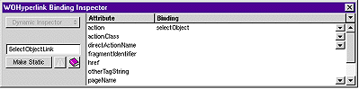Look in the
Main.javaclass to see how theselectObjectmethod is implemented.The method (shown below) simply sets the selected object of
movieDisplayGroupto the movie the user clicked.public void selectObject() { movieDisplayGroup.selectObject(movie); }
Bindings in the Editing Part
The text fields in the editing part are all bound to attributes of the movieDisplayGroup object’s selectedObject—the movie on which the user clicked. Typing new values into these fields updates the Movie enterprise object. To actually save the updated values to the database, the user must click the “Save to database” button.
Inspect the middle image button.
Its
actionattribute is bound to the action methodsaveChanges.Look in the
Main.javaclass to see howsaveChangesis implemented.The method (shown below with comments omitted) simply saves any changes that have been made to
movieDisplayGroup’s objects to the database.public void saveChanges() throws Exception {try {this.session().defaultEditingContext().saveChanges();
}
catch (Exception exception) {NSLog.err.appendln("Cannot save changes ");throw exception;
}
}
this.session()returns a Session object that represents a connection to the application by a single user. A Session object provides access to an EOEditingContext object. The expressionthis.session().defaultEditingContext().saveChanges();
sends a
saveChangesmessage to the Session’sdefaultEditingContext. This default EOEditingContext object manages graphs of objects fetched from the database, and all changes to the database are saved through it. For more information, see the EOEditingContext class specification in the WebObjects API Reference.An EOEditingContext’s
saveChangesmethod uses other Enterprise Objects Framework objects to analyze its network of enterprise objects (Movie objects referenced by the application) for changes and then to perform a set of corresponding operations in the database. If an error occurs during this process,saveChangesthrows an exception. TheMain.javasaveChangesmethod simply raises the exception, having the effect of returning a diagnostic page. You could return an error page that explains the reason for the save failure instead, but the application in this tutorial uses the default behavior.Inspect the first and third image buttons to see what their
actionattributes are bound to.They are bound to the
movieDisplayGroup.insertandmovieDisplayGroup.deletemethods respectively. The WODisplayGroupinsertmethod creates a new enterprise object, then inserts it into the display group’s list of objects just past the current selection. The WODisplayGroupdeletemethod deletes the display group’s selected object. These changes happen only in memory—not in the database. To actually insert a new row in the database (or delete a row), the user must click the “Save to database” button, invokingsaveChangeson the session’s EOEditingContext. The editing context analyzes the enterprise objects in memory, determines if any objects have been added, updated, or deleted, and then executes database operations to sync the database with the application.
Refining Main.wo
You may have noticed that your application doesn’t list fetched movies in any particular order. Also, when you insert a new movie, it appears in the list of movies as a blank line.
In this section you’ll tidy up the user interface to fix these things and a few others. Specifically, you’ll
Configure
movieDisplayGroupto sort the movies it displays.Assign default values to new Movie objects.
Change the way that dates and numbers are displayed.
You can also put the query part of the page in a table and capitalize Main.wo’s text field labels—for example, use “Title” instead of “title” and “Date Released” instead of “dateReleased.”
Specifying a Sort Order
You can change your application to sort movies alphabetically without writing any code. Display groups manage sorting behavior, and WebObjects Builder provides a Display Group Options panel for configuring this and other characteristics of display groups.
Double-click the
movieDisplayGroupvariable in the object browser.The Display Group Options panel opens for configuring
movieDisplayGroup.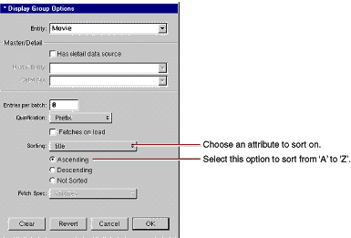Select the
titleattribute in the Sorting pop-up list.Select Ascending.
Click OK.
WebObjects Builder stores your settings in an archive that specifies how to create and configure movieDisplayGroup at runtime. The archive is stored inside your Main component in a file named Main.woo. You can’t see the file from Project Builder because you’re not meant to edit it directly, but WebObjects Builder’s object browser shows you which of your component’s variables are initialized from the archive (or woo file) so you don’t have to view its contents directly.
Specifying Default Values for New Enterprise Objects
When new enterprise objects are created in your application, it’s common to assign default values to some of their properties. For example, in your Movies application it makes sense to assign a default value for the title attribute so a new movie won’t be displayed in the list of movies as a blank line.
You could write an action method for the Insert/New button instead of binding it directly to the display group insert action method. In the custom action, you would create a new Movie object, assign default values to it, and then insert the new object into the display group. However, there are two additional ways to specify default values for new enterprise objects, without making explicit assignments:
Assign default values in the enterprise object class.
Specify default values using a display group.
For a particular situation, one of the approaches is usually better than the other. If the default values are intrinsic to the enterprise object, assign them in the enterprise object class. For example, consider a Member class with a memberSince property. It’s likely that you would automatically assign the current date to memberSince instead of forcing a user to supply a value. You’ll see how to use this technique in “Adding Behavior to Your Enterprise Objects.”
On the other hand, if the default values are specific to an application or to a particular user interface, explicitly initialize the object in code or specify the default values using a display group. In the Movies application, the need for default values is motivated by Main’s user interface: you need to provide a default value so users can tell when a newly inserted record is selected. In another situation, you might not want a new movie to have a default title; you might instead want a new movie’s title to be blank.
The Movies application specifies default values for newly created Movie objects using the display group, movieDisplayGroup.
Open
Main.javain Project Builder.Change the Main class’ constructor so that it looks like the following:
public Main(WOContext context) {super(context);
NSMutableDictionary defaultValues = new NSMutableDictionary();
defaultValues.setObjectForKey("New Movie Title", "title");movieDisplayGroup.setInsertedObjectDefaultValues(defaultValues);
}
This method assigns the value “New Movie Title” as the default value for a new movie’s
titleattribute. WhenmovieDisplayGroupinserts a new movie (as it does when a user clicks the Insert/New button), it creates a new movie and assigns this default value to that movie.
Setting a Date Format
To change the way that dates are displayed, you assign a date format to the element that displays the dates.
Using WebObjects Builder, inspect the
dateReleasedtext field, which is near the bottom of the Main component window.Notice that the text field has a
dateformatattribute that is bound to the string “%m/%d/%Y”. This binding tells the text field that it’s displaying dates and describes how to format them. The %m conversion specifier stands for month as a decimal number, %d stands for day of the month, and %Y stands for year with century.Click the combo box on the right side of the binding column. Choose ”%d %B %Y”.
This date format displays dates as 14 Jan 2005. The %b conversion specifier stands for abbreviated month name, and %Y stands for year with century. You can create your own date formats with any of the conversion specifiers defined for dates. For more information, see the NSTimestamp class specification in the WebObjects API Reference.
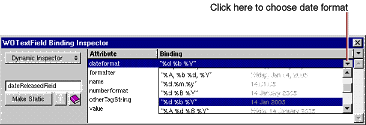
Setting a Number Format
In addition to a dateformat attribute, text field elements also have a numberformat attribute.
Inspect the
revenuetext field.The
revenuetext field’snumberformatattribute has no binding.Enter “$###,##0.00” as the value of the
numberFormatattribute (including the quotes).Using this number format, the Movies application formats the number 1750000 as $1,750,000.00. For more information on creating number formats, see the NSNumberFormatter class specification in the WebObjects API Reference.
Optional Exercise
You can tidy up the user interface even further by putting the query part of the page in a table to match the editing part of the page. Also, you should consider capitalizing Main.wo’s text field labels.
To put the query part of the page in a table, follow these steps:
Put the cursor inside the form element before the “title” text field (in the Query By Example segment).
Click the button in the toolbar to add a table.
The table panel appears.
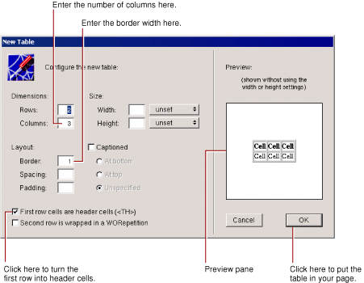Enter 2 in the Rows field and 2 in the Columns field.
Enter 0 for in the Border field to remove the appearance of a border.
Uncheck “First row cells are header cells.” The first row text will not appear in bold.
Click OK. The table appears in your page.
Type the labels Title: and Category: in the cells in the first column.
The table doesn’t resize to accommodate new cell content until you’re done typing; that is, until you move the cursor out of the edited cell.
Cut and paste the query text fields into their corresponding table cells.
Just click a text field to select it. When a text field is selected, it appears shaded with a box around it. Choose Cut from the Edit menu, double-click the cell to select its text, and choose Paste from the Edit menu.
Delete the old query field labels.
When you’re done, the query part should look like this:
Now edit the text labels in the editing part of the page and put any other finishing touches on the page that you want. The finished component might look something like this:
Adding the MovieDetails Page
The MovieDetails page shows you the detailed information about a movie you select in the Main page. For this to work, the Main page has to tell the MovieDetails page which movie the user selected. The MovieDetails page keeps track of the selected movie in its own instance variable. In this section, you’ll
Create a new component whose interface you’ll create yourself.
Assign Main’s selected movie to a variable in the MovieDetails page.
Create a way to navigate from Main to MovieDetails and back.
In the sections following this one, you’ll extend the MovieDetails page to display movie roles and the starring actors.
Creating the MovieDetails Component
In Project Builder, choose File > New in Project.
In the New File panel, click the Web Components suitcase.
Type MovieDetails in the Name field.
Click OK.
In the wizard panel, choose None for available assistance.
Click Finish.
Open the new component,
MovieDetails.wo, in WebObjects Builder.
Storing the Selected Movie
Now, in the MovieDetails component, create a variable that holds the application’s selected movie. Later on, you’ll add code to the Main.java class that assigns Main’s selected movie to this variable.
Choose Add Key from the pull-down list.
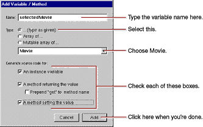Name the variable selectedMovie.
Set the variable’s type to Movie.
Movie isn’t actually a class; it’s an entity. It’s listed in the combo box as a type along with entries for all the entities in your model. When you choose an entity as the type for your variable, WebObjects Builder recognizes that the variable is an enterprise object. Using information in the model, WebObjects Builder can determine the entity’s corresponding enterprise object class and the properties of that class.
Check the “An instance variable” box.
Check the “A method returning the value” box.
Check the “A method setting the value” box.
Click Add.
Navigating from Main to MovieDetails
To get to the MovieDetails page from the Main page, users use a hyperlink. Clicking the hyperlink should set MovieDetail’s selectedMovie variable and then open the MovieDetails page.
Add a hyperlink at the bottom of the Main component.
Replace the text “Hyperlink” with “Movie Details”.
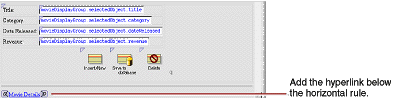Choose Add Action from the pull-down list.
In the Add Action panel, type showDetails in the Name field.
Select MovieDetails from the “Page returned” combo box.
Click Add.
Bind the
showDetailsaction to the hyperlink’sactionattribute.In Project Builder, modify the
showDetailsaction inMain.javato look like the following:public MovieDetails showDetails() {MovieDetails nextPage =
(MovieDetails)pageWithName("MovieDetails");// Initialize your component here
EOEnterpriseObject selection =
(EOEnterpriseObject)movieDisplayGroup.selectedObject();
nextPage.setSelectedMovie(selection);
return nextPage;
}
This method creates the MovieDetails page and then invokes its
setSelectedMoviemethod with the movie that’s selected in the Main page. The display group methodselectedObjectreturns its selected object, which, in the Main component, is set when a user clicks a movie title hyperlink.
Designing MovieDetails’ User Interface
Now lay out the user interface for MovieDetails.
Create a top-level heading with the text Movie Details.
Recall that to create a top-level heading, you type the text of the heading, select the text, click the
 button to add a heading element around the text, and then use the Inspector to set the heading’s level, as you did in “Using the Inspector.”
button to add a heading element around the text, and then use the Inspector to set the heading’s level, as you did in “Using the Inspector.”Below the heading, add a string element.
With the string element selected, add a heading.
This adds a new level-1 heading element around the string. The MovieDetails page will show the title of the selected movie in this heading.
Click <H1> in the path view. The Inspector now displays the Heading Level.
Click 3 in the Heading Inspector.
Add labels and string elements to display the selected movie’s category, date released, and revenue.
Bold the labels.
Bind
selectedMovie.titleto thevalueattribute of the first string element (the one in the heading).Similarly, create bindings for the Category, Date Released, and Revenue strings.
At the bottom of the page, add a horizontal rule.
Adding Date and Number Formats
String elements have dateformat and numberformat attributes just like text field elements. Create bindings for the Date Released and Revenue strings so that dateReleased and revenue values are displayed the way they are in the Main page.
Add the date format "%d %B %Y" to the Date Released string. You can select the format from the combo box in the Inspector’s binding column.
Add the number format "$###,##0.00" to the Revenue string. You can select the format from the combo box in the Inspector’s binding column.
Navigating from MovieDetails to Main
Now add a hyperlink to the MovieDetails page so users can navigate back to the Main page from MovieDetails.
Add a hyperlink to the bottom of the page.
Label it Movie Search.
Bind the hyperlink’s
pageNameattribute to the text (including the quotes) "Main". You can select “Main” from the combo box in the inspector’s binding column.Recall that the
pageNameattribute is a mechanism for navigating to another page without writing code. By setting the attribute to “Main”, you’re telling the application to open the MovieSearch page when the hyperlink is clicked.
Running Movies
Be sure that all your project’s files are saved (including the components in WebObjects Builder), and build and run your application. In the Main page, select a movie and click the Movie Details link. The MovieDetails page should display all the movie’s information.
Refining Your Model
The model created for you by the wizard is just a starting point. For most applications, you need to do some additional work to your model to make it useful in your application. To refine your model so that it can be used in the Movies application, you’ll ultimately need to do all of the following:
Remove primary and foreign keys as class properties.
Add relationships to your model if the wizard didn’t have enough information to add them for you.
Configure your model’s relationships in the Advanced Relationship Inspector.
Generate source files for the Talent class.
These steps are described in more detail throughout the rest of this tutorial.
Opening Your Model
In Project Builder, click the Resources category.
Select
Movies.eomodeld.Double-click the model icon.
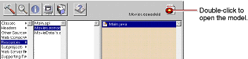
Project Builder opens your model file in EOModeler, launching EOModeler first if it isn’t already running. EOModeler displays your model in the Model Editor. It lists the entities for the tables you specified in the wizard—Movie, MovieRole, and Talent.
Note: In the screen captures of EOModeler, there might be other columns displayed in the picture than what EOModeler shows when you run it. These columns can be shown by choosing Add Column at the bottom of EOModeler. To remove a column from being displayed, click the column and press the delete key.
Removing Foreign Keys as Class Properties
By default, the wizard makes all of an entity’s attributes, except primary keys, class properties. When an attribute is a class property, it means that the property is a part of your enterprise object, usually as an instance variable.
You should mark as class properties only those attributes whose values are meaningful in the objects that are created when you fetch from the database. Attributes that are essentially database artifacts, such as primary and foreign keys, shouldn’t be marked as class properties unless the key has meaning to the user and must be displayed in the user interface.
Eliminating primary and foreign keys as class properties has no adverse effect on how Enterprise Objects Framework manages enterprise objects in your application.
In the left frame (or tree view), click the Movie entity.
The right frame switches from a view of the entities in the model to a view of Movie’s attributes.
A symbol in the first column means that the attribute is a primary key for the selected entity. A symbol in the second column means that the attribute is a class property.
Click in the Class Property column to remove the symbol for the
studioIdattribute, which is a foreign key. The wizard didn’t makemovieIda class property because it is a primary key.
Adding Relationships to Your Model
The Movies application uses two pairs of inverse relationships. The first pair defines the relationship between the Movie and MovieRole entities, while the second pair defines the relationship between the MovieRole and Talent entities. An Enterprise Objects Framework relationship is directed; that is, a relationship has a source and a destination. Generally, models define a relationship for each direction.
Select the Movie entity.
The right frame of the Model Editor shows the Movie’s relationships as well as its attributes.

If your Movie entity doesn’t have a
movieRolesrelationship, it means that the database server’s schema information for your database didn’t have enough information for the wizard to create them. You need to create them by hand now. The next several steps explain how.Choose Property > Add Relationship.
A new relationship named “Relationship” is added in the table view at the bottom of the Model Editor. The new relationship is already selected.

With the relationship selected in the right frame of the Model Editor, click the button (in the toolbar) to inspect the relationship.
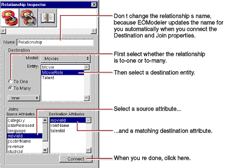In the Inspector, select the To Many option.
Select MovieRole as the destination entity.
Select
movieIdin the Source Attributes list.Select
movieIdin the Destination Attributes list.Click Connect.
EOModeler automatically renames the relationship based on the name of the destination entity. For example, after connecting a to-many relationship from Movie to MovieRole, EOModeler names the relationship “movieRoles”. To-one relationships are named with the singular form of the destination entity’s name. For example, EOModeler names the inverse to-one relationship (from MovieRole to Movie) “movie”.
If the wizard created your relationship and used a name other than “movieRoles”, consider renaming the relationship. The rest of this tutorial assumes that your relationships are named using EOModeler’s naming convention.
Repeat the steps above to create the following relationships (if they do not already exist):
A to-one relationship named “movie” in the MovieRole entity where
The destination entity is Movie.
The source attribute is
movieId.The destination attribute is
movieId.A to-one relationship named “talent” in the MovieRole entity where
The destination entity is Talent.
The source attribute is
talentId.The destination attribute is
talentId.A to-many relationship named “movieRoles” in the Talent entity where
The destination entity is MovieRole.
The source attribute is
talentId.The destination attribute is
talentId.
Choose Tools > Diagram View to switch the Model Editor to Diagram View.
At this point your model has all the relationships it needs. The Diagram View gives you an overview of the entities in the model and their relationships to other entities.
You can also use the Diagram View to edit your model. Double-click an attribute or relationship to change its name. To create a relationship and its inverse, Control-drag from the relationship’s source attribute to its destination attribute.
Using the Advanced Relationship Inspector
There are several additional settings you use to configure a relationship’s referential integrity rules. For these, use the Advanced Relationship Inspector.
Inspect Movie’s
movieRolesrelationship.In the Inspector, click the Advanced Relationship button.
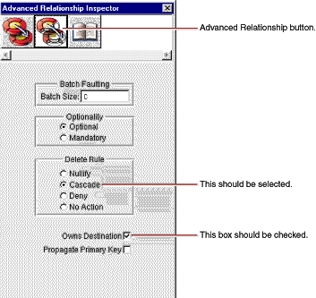Ensure that the delete rule is set to Cascade.
Ensure that the Owns Destination box is checked.
Check the Propagate Primary Key box.
A relationship that propagates its primary key propagates its key value to newly inserted objects in the destination of the relationship. In this case, checking the Propagate Primary Key box means that if you create a new MovieRole and add it to a Movie’s list of MovieRoles, the Movie object automatically assigns its
movieIdvalue as the value for the new MovieRole’smovieIdproperty.This option is usually used with relationships that own their destination. For more information on propagating primary keys, see “Where Do Primary Keys Come From?.”
Ensure that Talent’s
movieRolesrelationship has its delete rule set to Deny.Ensure that Talent’s
movieRolesrelationship owns its destination.Set Talent’s
movieRolesrelationship to propagate its primary key.Choose Model > Save to save your model.
Where Do Primary Keys Come From?
Enterprise Objects Framework uses primary keys to identify enterprise objects in memory, and it works best if you never change an enterprise object’s primary key from its initial value. Consequently, applications usually generate and assign primary key values automatically instead of having users provide them. For example, the Movies application assigns a movieId value to a new movie when it’s created, and the value never changes afterward. The Movies interface doesn’t even display movieId values because they aren’t meaningful to users of the application.
Enterprise Objects Framework provides several mechanisms for generating and assigning unique values to primary key attributes. By default, Enterprise Objects Framework uses a native database mechanism to assign primary key values.
The Movies application generates primary key values for Movie and Talent objects using the default mechanism, but MovieRole is a special case because:
MovieRole’s primary key is compound. The default behavior of generating a primary key value using a native database mechanism works only on simple (not compound) primary keys.
A MovieRole’s primary key attributes,
movieIdandtalentId, must match the corresponding attributes in the MovieRole’s Movie and Talent objects. The default mechanism generates new, unique values.
Instead of the default mechanism, Enterprise Objects Framework uses primary key propagation to assign primary keys to MovieRole objects. By configuring the Movie’s movieRoles relationship to propagate primary key, the Framework knows to assign a new MovieRole’s movieId to the same value as the movieId of the MovieRole’s Movie. Similarly, a new MovieRole’s talentId is set to the same value as the talentId of the MovieRole’s Talent.
Setting Up a Master-Detail Configuration
So far your Movies application fetches, inserts, updates, and deletes only Movie objects. Considered alone, a Movie object isn’t as interesting as it is when it’s related to actors and roles. In this section, you’ll add MovieRole and Talent objects to the Movies application.
The relationships defined in your model now come into play. Using Movie’s movieRoles relationship, you can display the MovieRoles for the selected Movie. In this type of configuration, called master-detail, a master display group holds enterprise objects for the source of a relationship, while a detail display group holds records for the destination. As individual records are selected in the master display group, the detail display group gets a new set of enterprise objects to correspond to the selection in the master.
In the Movies application, the master-detail configuration is built around Movie’s movieRoles relationship. The configuration is split across two pages in the application. The master, movieDisplayGroup, is in the Main component, while the detail is in MovieDetails.
In this section, you’ll
Create and configure the detail display group.
Extend the MovieDetails user interface to hold MovieRole and Talent information.
Creating a Detail Display Group
You can create a detail display group several different ways. You can write a declaration for it in Project Builder, or you can use WebObjects Builder’s Add Variable/Method command. But the easiest way to create a detail display group is by dragging a relationship from EOModeler into your component, as described below.
In EOModeler’s tree view, expand the Movie entity.
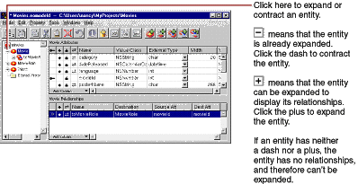Drag the Movie’s
toMovieRolerelationship from the tree view into the MovieDetails component’s object browser.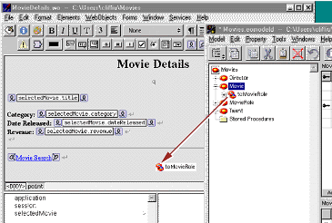An Add Display Group panel opens.
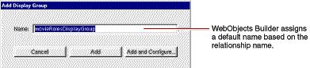In the Add Display Group panel, change the name to movieRoleDisplayGroup.
Click Add and Configure.
The Display Group Options panel opens so you can immediately configure the newly created display group.
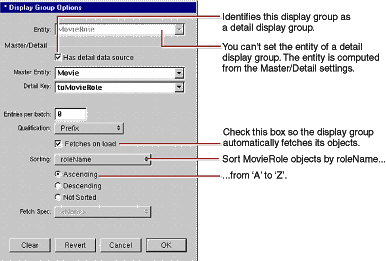Ensure that the “Has detail data source” box is checked. This means that
movieRoleDisplayGroupgets its objects from a EODetailDataSource object.All display groups use some kind of data source to fetch their objects. A data source is an object that exists primarily as a simple means for a WODisplayGroup to access a store of objects. It’s through a data source that a display group fetches, inserts, updates, and deletes database records.
An EODetailDataSource is a subclass of EODataSource that’s intended for use in master-detail configurations. A detail data source keeps track of a master object and a detail key. The master object is typically the selected object in a master display group, but a master display group isn’t strictly required. The detail key is the name of the relationship on which the master-detail configuration is based. When a detail display group asks its data source to fetch, the EODetailDataSource simply gets the destination objects from the master object as follows:
detailObjects = masterObject.valueForKey(detailKey);
In your master-detail configuration, the master object is the selected Movie, and the detail key is
movieRoles. WhenmovieRoleDisplayGroupasks its data source for its MovieRole objects, the detail WODisplayGroup returns the objects in the selected Movie’smovieRolesarray of MovieRoles. Similarly, when MovieRole objects are inserted or deleted inmovieRoleDisplayGroup, they are added and removed from the master object’smovieRolesarray.Set the display group to sort alphabetically by
roleName.Check the “Fetches on load” box.
When “Fetches on load” is selected, the display group fetches its objects as soon as the component is loaded into the application. You want this feature in the MovieDetails page so that users are immediately presented with the selected movie’s roles. In contrast, the Main page does not fetch on load; it shouldn’t present a list of movies until the user has entered search criteria and clicked Match.
Click OK.
In Project Builder, modify MovieDetail’s
setSelectedMoviemethod to look like the following:public void setSelectedMovie(EOEnterpriseObject newSelectedMovie) {selectedMovie = newSelectedMovie;
movieRoleDisplayGroup.setMasterObject(newSelectedMovie);
}
With this addition, whenever a user navigates to the MovieDetails page,
setSelectedMovieupdates the master object of themovieRoleDisplayGroupso it displays the corresponding MovieRole objects.
Adding a Repetition
Now you’ll extend the user interface of the MovieDetails component to display the actors in the selected movie. Because different movies have different numbers of roles, you need the dynamism of a repetition element.
In the MovieDetails component window, add the bolded text
Starring:beneath the Revenue line.Below the Starring label, add a repetition.
Replace the “Repetition” text with three string elements.
The strings should all be on the same line, so don’t type carriage returns between them.
Type a space between the first two strings and the word “ as ” (with a space before and after) between the last two.
Add a carriage return after the last string.
Configuring a Repetition
Now configure MovieDetails’ repetition in a way similar to the way Main’s repetition is configured. First you need to create a new variable to bind to the repetition’s item attribute.
Use the Add Key command to add a new variable,
movieRole,whose type is set to the MovieRole entity.Don’t create set and get methods for
movieRole. You won’t need accessor methods because the variable is used only within the MovieDetails component and shouldn’t be visible to any other classes.Bind
movieRoleDisplayGroup.displayedObjectsto the repetition’slistattribute.Bind
movieRoleto the repetition’sitemattribute.Bind
movieRole.toTalent.firstNameto thevalueattribute of the first string in the repetition.Bind
movieRole.toTalent.lastNameto thevalueattribute of the second string.Bind
movieRole.roleNameto thevalueattribute of the last string.
When you’re done, the repetition bindings should look like the following:
Running Movies
Be sure that all your project’s files are saved (including the components in WebObjects Builder and the model in EOModeler), and build and run your application. In the Main page, select a movie and click the Movie Details link. Now, in addition to displaying all the movie’s information, the Movie Details page should also display the movie’s roles and actors.
Updating Objects in the Detail Display Group
In this section, you’ll add the ability to insert, update, and delete movie roles. The MovieDetails page will then look something like this:
Many of the features in this page are similar to features in the Main page, but in this section you perform by hand the tasks the wizard performed for you to create Main. Already you’ve learned how to create a WODisplayGroup variable and how to bind it to dynamic elements. In this section you’ll
Write code to update a display group’s selected object.
Create and configure a browser.
Create a custom enterprise object class.
Use display group actions to configure image buttons to insert, update, and delete.
Managing a WODisplayGroup’s Selection
Remember how clicking a movie title in the Main page selects the corresponding Movie object in movieDisplayGroup. MovieDetails has a similar behavior for selecting a MovieRole object in movieRoleDisplayGroup.
First you need to add a hyperlink element around the repetition’s role name string so that users can select a particular MovieRole. When a user clicks one of the movie role hyperlinks, the application should select the corresponding MovieRole object in the movieRoleDisplayGroup.
Select the repetition’s role name string element.
Click the Add WOHyperlink button in the toolbar to add a hyperlink element around the string.
Now you need to create an action method to invoke when the hyperlink is clicked.
Use the Add Action command in the pull-down list to add an action named
selectObject, returningnull.Bind the
selectObjectmethod to the hyperlink’sactionattribute.Now write the code for
selectObjectinMovieDetails.java. Modify theselectObjectaction to look like the following:public WOComponent selectObject() {movieRoleDisplayGroup.selectObject(movieRole);
return null;
}
Adding a Form
Now lay out the user interface used to view and edit the selected MovieRole. When you’re done, it should look like the following:
Add another horizontal rule after the repetition.

Use the button to add a WOForm element between the two horizontal rules.
While the Form text is highlighted, click the button to replace the text with a WOBrowser element.
Beneath the browser (within the bounds of the new form), type the bolded text Role Name:.
Add a text field.
Bind the text field’s
valueattribute tomovieRoleDisplayGroup.selectedObject.roleName.
Adding a Talent Display Group
The browser you just created is going to display a list of Talent objects. Like a repetition element, a browser has list and item attributes. As the browser moves through its list, the browser sets item to the object at the current index. The Movies application uses a display group to provide the browser with a list of Talent objects, so now you need to create the new display group and a variable to bind to the browser’s item attribute.
Use the Add Key command to create two new instance variables:
talentDisplayGroup, whose type is WODisplayGrouptalent, whose type is TalentYou don’t need to add set and get methods for the variables.
Using the Display Group Options panel, assign the
talentDisplayGroupobject’sentity to Talent.Remember that to open the Display Group Options panel, simply double-click the
talentDisplayGroupvariable in the object browser. The icon initially displayed next to the variable indicates that initialization parameters have not yet been set.Configure
talentDisplayGroupto sort its objects alphabetically (ascending) bylastName.Configure it to fetch on load and click OK.
After you configure
talentDisplayGroup, the object browser shows a icon next to the variable.
The Movies application uses a display group to provide Talent objects, but you could fetch the Talent objects from the database without one. Display groups provide a simple way to fetch, insert, update, and delete enterprise objects without writing much, if any, code. To get finer-grained control over these operations, you can work directly with an EOEditingContext object. An editing context can do everything a display group does and much more, but you have to write more code to use one. For more information, see the EOEditingContext class specification in the WebObjects API Reference.
Configuring the Browser
Create your browser’s bindings. The steps are similar to those for creating bindings for a repetition.
Bind
talentDisplayGroup.displayedObjectsto the browser’slistattribute.Bind
talentto the browser’sitemattribute.Bind
talent.lastNameto the browser’svalueattribute.The
valueattribute tells the browser what string to display. For eachitemin itslist, the browser evaluates theitem’svalue.The browser in the MovieDetails page should display the actors’ full names, but there isn’t an attribute for full name. In the next section, you’ll create a custom Talent class that implements a
fullNamemethod, but for now just usetalent.lastNameas thevalueattribute.A browser also has a
selectionsattribute that should be bound to an array of objects. A browser’s selection can be zero, one, or many objects; but in the Talent browser, the selection should refer to a single object. Consequently, you need to add two methods to manage the browser’s selection: one to return an array containing the selected Talent and one to set the selected Talent from an array object.Add the method
talentSelectionto theMovieDetails.javaclass as follows:public NSArray talentSelection() {EOEnterpriseObject aTalent;
EOEnterpriseObject aMovieRole =
(EOEnterpriseObject)movieRoleDisplayGroup.selectedObject();
if (aMovieRole == null){return null;
}
aTalent = (EOEnterpriseObject)aMovieRole.valueForKey("talent");if (aTalent == null){return null;
} else {return new NSArray(aTalent);
}
}
Because the browser expects an array for its
selectionsattribute, this method packages the selected MovieRole’stalentobject in an array. If the selected MovieRole object isnull,talentSelectionsimply returnsnullto indicate that the browser shouldn’t set a selection.Add the method
setTalentSelectionas follows:public void setTalentSelection(NSArray talentArray){if (talentArray.count() > 0){EOEnterpriseObject aMovieRole =
(EOEnterpriseObject)movieRoleDisplayGroup.selectedObject();
EOEnterpriseObject selectedTalent =
(EOEnterpriseObject)talentArray.objectAtIndex(0);
aMovieRole.addObjectToBothSidesOfRelationshipWithKey(
selectedTalent, "talent");
}
}
Again because the browser uses an array for its
selectionsattribute, thesetTalentSelectionmethod must take an array as its argument. If the size oftalentArrayis nonzero, then this method sets the selected MovieRole’stalentto the first object in the array. Note that by default, a user can’t select more than one actor in a browser.With the addition of these methods, WebObjects Builder now displays
talentSelectionin MovieDetail’s object browser.Save
MovieDetails.java.Bind
talentSelectionto the browser’sselectionsattribute.
Adding Insert, Save, and Delete Buttons
Now add the buttons that let users insert, save, and delete MovieRoles. When you’re done, it should look like the following:
Inside the form, add three image buttons below the Role Name text field.
Inspect the first active image element.
Bind the
filenameattribute to the text (including the quotes) "DBWizardInsert.gif".Follow the same procedure to set the second image’s
filenameattribute to the text (including the quotes) "DBWizardUpdate.gif".Set the last image’s
filenameattribute to the text (including the quotes) "DBWizardDelete.gif".The WODisplayGroup class defines the actions
insertanddelete. You’ll bind to the Insert/New and Delete buttons. It doesn’t, however, provide a save method. You’ll have to provide that yourself.Copy the
saveChangesmethod from theMain.javaclass and paste it into theMovieDetails.javaclass:public void saveChanges() throws Exception {try {this.session().defaultEditingContext().saveChanges();
}
catch (Exception exception) {NSLog.err.appendln("Cannot save changes ");throw exception;
}
}
Save
MovieDetails.java.Bind
movieRoleDisplayGroup.insertto the Insert/New image’sactionattribute.Bind the
saveChangesmethod to the “Save to database” image’sactionattribute.Bind
movieRoleDisplayGroup.deleteto the Delete image’sactionattribute.Save
MovieDetails.wo.
Adding Behavior to Your Enterprise Objects
Right now, the Movies application maps all its entities to the EOGenericRecord class. As the preceding sections illustrate, you can go quite far in an application using just this default enterprise object class, but now you need to add some custom classes to the Movies application.
In this section, you’ll learn how to:
Generate source code for a custom enterprise object class.
Provide default values in a custom enterprise object class.
You’ll create custom classes for the Talent and MovieRole entities. In the Talent class, you’ll write a fullName method that concatenates a Talent’s first and last names. You’ll use the method to populate MovieDetail’s browser element. In the MovieRole class, you’ll provide default values for newly inserted MovieRoles so they don’t show up in the list of movie roles as a blank line.
Specifying Custom Enterprise Object Classes
Unless you specify otherwise, EOModeler maps entities to the EOGenericRecord class. When you want to use a custom class instead, you need to specify that custom class in the model.
In EOModeler, inspect the Talent entity.
In the Entity Inspector for Talent, type Talent in the Class field.
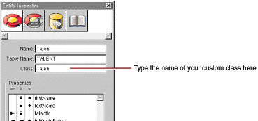Set the MovieRole entity’s class to MovieRole.
Now you can generate the source files for your Talent and MovieRole classes.
Generating Custom Enterprise Object Classes
You can easily create a custom class to hold your business logic: EOModeler provides a command to generate enterprise object classes.
In EOModeler, select the Talent entity.
Choose Property > Generate Java Files.
A Choose Class Name panel opens. If you opened the model file from Project Builder, the Choose Class Name panel displays the project as the destination directory and
Talent.javaas the default filename.Ensure that the Movies project directory is selected.
Click Save.
A panel opens, asking if you want to insert the file in your project.
Click Yes.
EOModeler creates the source file
Talent.javaand adds it to your project.Follow the same procedure for MovieRole.
Adding Custom Behavior to Talent
Now add the fullName method to Talent and bind it to the browser.
Open
Talent.javain Project Builder.The class file and implements set and get methods for all of Talent’s class properties (
firstNameandlastName).Add the method,
fullName, as follows.public String fullName(){return firstName() + " " + lastName();
}
After you save,
fullNameappears in the object browser of WebObjects Builder as a property of Talent.Bind
talent.fullNameto the browser’sdisplayStringattribute and unbind thevalueattribute.
Providing Default Values in MovieRole
As discussed in “Specifying Default Values for New Enterprise Objects,” there are two main ways to specify default values for new enterprise objects without making explicit assignments:
Assign default values in the enterprise object class.
Specify default values using a display group.
For the Movie class, you specified default values using a display group. This approach is also the more appropriate choice for the MovieRole class, but you’ll use the other approach for MovieRole just to see how its done.
Open
MovieRole.javain Project Builder.Add the method,
awakeFromInsertionInEditingContext, as followspublic void awakeFromInsertion(EOEditingContext context){super.awakeFromInsertion(context);
setRoleName("New Role");}
This method is automatically invoked right after your enterprise object class creates a new MovieRole and inserts it into an editing context, which happens when you use a display group to insert.
Running Movies
Be sure that all your project’s files are saved (including your model file), and build and run your application. Now when a user clicks the Insert/New button on the MovieDetails page, a new MovieRole is inserted, with “New Role” already displayed as the role name.
© 2004 Apple Computer, Inc. All Rights Reserved. (Last updated: 2004-02-01)